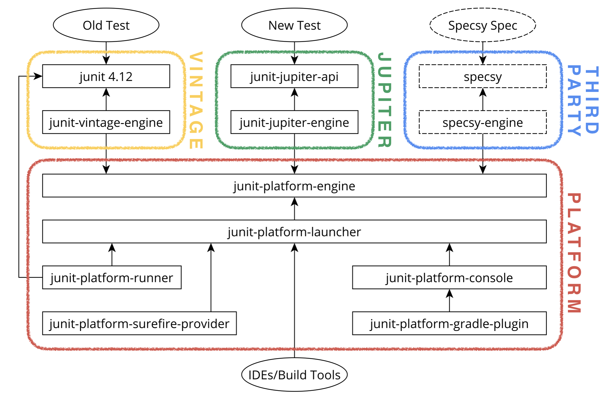

The next generation of JUnit
Why JUnit 5?
Issues with JUnit 4
No official tool integration API
Issues with JUnit 4
Extension mechanism
- Runner: powerful but not composable
- Rule: composable but not powerful
Issues with JUnit 4
High overhead
@Test
public void testExceptionMessage() {
try {
new ArrayList<Object>().get(0);
fail();
} catch (IndexOutOfBoundsException e) {
assertThat(e.getMessage(), is("Index: 0, Size: 0"));
}
}
So, what's new?
New Architecture
Jupiter + Vintage + Platform = JUnit 5
New Architecture
Extensions
Powerful and composable
How do I implement extensions?
Example extension to skip a test
public class SkipExtension implements ExecutionCondition {
@Override
public ConditionEvaluationResult evaluateExecutionCondition(ExtensionContext e) {
return ConditionEvaluationResult.disabled("Skipped");
}
}
More Extensions
AfterAllCallback, AfterEachCallback, BeforeAllCallback, BeforeEachCallback, ExecutionCondition, ParameterResolver, TestExecutionExceptionHandler, ...
More Extensions...Okey, cool... how do I apply extensions?
Easy!
@Test
@ExtendWith(SkipExtension.class)
public void skipMe() {
Assertions.fail();
}
Applying them using annotations
@Target({ElementType.TYPE, ElementType.METHOD})
@Retention(RetentionPolicy.RUNTIME)
@ExtendWith(SkipExtension.class)
public @interface Skip {}
@Test
@Skip
public void skipMeToo() {
Assertions.fail();
}
The configurable way
Simply list your extensions in this file:
src/test/resources/META-INF/services/org.junit.jupiter.api.extension.ExtensionHow the content could look like:
ch.dk.junit5exploration.SkipExtension
ch.dk.junit5exploration.OtherCustomExtensionNew assertions!
Personal favourite: assertThrows
@Test
public void shouldThrowException() {
IllegalStateException illegalStateException = assertThrows(IllegalStateException.class,
() -> {
throw new IllegalStateException();
});
assertThat(illegalStateException.getMessage()).isNull();
}
assertTimeout
@Test
public void shouldReturnCorrectMessageBeforeTimeoutIsExceeded() {
final String message = assertTimeout(Duration.ofMillis(50), () -> {
Thread.sleep(20);
return "Hello World!";
});
assertThat(message).isEqualTo("Hello World!");
}
assertAll
@Test
public void shouldDoMultipleAsserts(){
String foo = "bar";
assertAll(
() -> assertThat(foo).isNotNull(),
() -> assertThat(foo).isNotEmpty(),
() -> assertThat(foo).isEqualTo("bar")
);
}
assertEquals
Small refactorings
@Test
public void shouldBeEquals(){
assertEquals("Now the message comes first", "expected", "actual");
}
Personal preference: Using AssertJ instead
@Test
public void shouldBeEqualsAssertJ(){
assertThat("actual").as("Message").isEqualTo("expected");
}
Parameterized tests
@ParameterizedTest
@ParameterizedTest
@CsvSource({
"1,2,3",
"4,2,6",
"8,-1,7",
"-4,8,4"
})
public void sum(Integer a, Integer b, Integer expected) {
Integer sum = getSum(a, b);
assertThat(sum).isEqualTo(expected);
}Different types of sources
@ValueSource(ints = { 3, 6, 15})
@EnumSource(MyEnum.class)
@MethodSource("numberSource")
@CsvSource({
"1,2",
"2,4",
"3,6"
})
@CsvFileSource(resources = "/source.csv")
private static Stream numberSource() {
return Stream.of(
Arguments.of(1),
Arguments.of(2),
Arguments.of(3)
);
}
ArgumentConverter
@ValueSource(strings = { "2018-01-01", "2018-01-31" })
void test(LocalDate localDate) {
...
}
Custom ArgumentConverter
@Test
@ParameterizedTest
@CsvSource({
"15, F"
})
void convertWithCustomHexConverter(int expected,
@ConvertWith(HexConverter.class) int actual) {...}
class HexConverter implements ArgumentConverter {
@Override
public Object convert(Object source, ParameterContext context)
throws ArgumentConversionException {
try {
return Integer.parseInt((String) source, 16);
} catch (NumberFormatException e) {
throw new ArgumentConversionException("Cannot convert hex value", e);
}
}
}DynamicTest
@TestFactory
public Stream<DynamicTest> dynamicTestsFromStreamInJava8() {
return IntStream.range(0, 100)
.mapToObj(i -> DynamicTest.dynamicTest("Test " + 1,
() -> {
assertThat(testee.sum(i, i)).isEqualTo(i * 2);
}));
}More descriptive and readable tests
@Nested & @DisplayName
@DisplayName("JUnit 5 Nested Example")
class JUnit5NestedExampleTest {
@Nested
@DisplayName("Tests for the method A")
class A {
@Test
@DisplayName("Example test for method A")
void sampleTestForMethodA() {
System.out.println("Example test for method A");
}
}
}
UTF-32
More characters to express your feelings!
@Test
@DisplayName("\uD83D\uDCA9\uD83D\uDCA9\uD83D\uDCA9\uD83D\uDCA9")
void someCrappyTest() {...}How to migrate?
Maven
junit
junit
${junit.version}
test
org.junit.jupiter
junit-jupiter-api
${junit.jupiter.version}
test
org.junit.jupiter
junit-jupiter-params
${junit.jupiter.version}
test
org.junit.vintage
junit-vintage-engine
${junit.jupiter.version}
test
Renamed annotations
| JUnit 4 | JUnit 5 |
|---|---|
@Before |
@BeforeEach |
@After |
@AfterEach |
@BeforeClass |
@BeforeAll |
@AfterClass |
@AfterAll |
@Ignore |
@Disable |
Intellij for the rescue!
Exceptions
@Test(expected = IllegalArgumentException.class)
public void shouldThrowAnException() {
throw new IllegalArgumentException();
}@Test
void shouldThrowAnException() {
Assertions.assertThrows(IllegalArgumentException.class, () -> {
throw new IllegalArgumentException();
});
}Tags
@Category(IntegrationTest.class)
public class JUnit4CategoryTest {
}@Tag("integration")
class JUnit5TagTest {
}Spring Extension
@RunWith(SpringJUnit4ClassRunner.class)
@ContextConfiguration(classes = SpringTestConfiguration.class)
public class JUnit4SpringTest {
...
}@ExtendWith(SpringExtension.class)
@ContextConfiguration(classes = SpringTestConfiguration.class)
class JUnit5SpringTest {
...
}Mockito Extension
@RunWith(MockitoJUnitRunner.class)
public class JUnit4MockitoTest {
...
}@ExtendWith(MockitoExtension.class)
class JUnit5MockitoTest {
...
}}Rule migration support
org.junit.jupiter
junit-jupiter-migrationsupport
5.2.0
Parallel execution
src/test/resources/junit-platform.propertiesjunit.jupiter.execution.parallel.enabled=true
junit.jupiter.execution.parallel.mode.default=concurrent
junit.jupiter.execution.parallel.config.strategy=dynamic